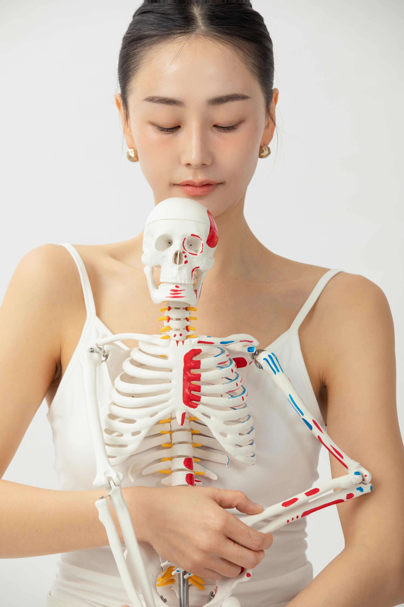

고민지민 코치 · 신경계 필라테스 강사
몸과 신경계가 바뀌면, 예민함은 재능입니다.
예민함으로 망가진 몸과 마음을
회복시키는 여정을 함께합니다.

About
11년차 신경계 필라테스 강사
예민함은 고쳐야 할 성격이 아니라,
몸과 신경계가 보내는 신호입니다.
고민지민 코치는 신경계 필라테스를 통해
예민한 사람들이 자신의 기질을 이해하고,
예민함으로 망가진 몸과 마음의 균형을
되찾아가는 여정을 함께합니다.
Program
신경계 필라테스와 매일의 작은 습관으로
예민함과 화해하는 6주
더 많은 분들과 함께할
다음 여정을 준비하고 있어요.
Review
병원에 가도 스트레스 말고는 원인을 찾지 못했지만 항상 아프고 불면에 시달렸어요.
그러다 보니 예민한 일상을 보냈고 자책하는 날이 이어졌구요.
자존감이 떨어지고 인간관계도 힘들었던 찰나에 지민쌤을 만나게 되었어요.
그저 마음이 유약해서 생기는 문제인 줄 알았지만 몸과 신경계가 변화하니 병원에 가는 일도 불면도, 자책감도 많이 줄어들었어요.
아직도 나아가는 중이지만 건강상에도 큰 변화를 느끼고 있습니다.
감사합니다.
아무 일도 없는데 불안하고 우울함에 힘들었고 저는 단순히 제가 나약해서라고 생각했습니다.
이것이 호흡과 연관이 있을 줄은 몰랐어요.
솔직히 매일 복습은 못했지만...ㅋㅋ 그래도 분명히 저는 달라진 걸 느껴요.
그리고 이제는 호흡부터 체크해요!!
일단 예민하다 보니 인간관계도 힘들고 제가 문제처럼 여겨졌어요.
명상 수업을 들어도 제자리처럼 느껴지고 명상이 어렵게만 느껴졌거든요.
나라는 인간은 구제불능인가 보다 하는 마음이 들어서 그게 또 저를 힘들게 했어요.
인스타그램에서 지민코치님을 우연히 보게 되어 무료상담 후 함께하게 되었습니다.
단순히 신경계 필라테스 수업일 줄 알았는데 생각보다 더 광범위하게 다루는 수업이어서 놀라고 또 버겁기도 했지만 내 몸에 대해서 새롭게 이해하게 되는 것들이 정말 많아서 신기하고 좋았어요.
유튜브와 인스타그램에서
더 많은 이야기를 만나보세요.